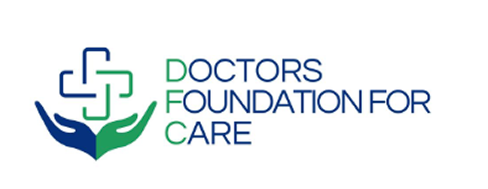

Draft v0.1 - Finance pillar working model Companion to 00 - Strategic Proposal
⚠️ Read this before quoting any number
A deep evidence search (27 sources fetched, 104 claims extracted, 25 adversarially verified, 19 confirmed) found that Nigeria has no reliable, current published unit-cost dataset for EMS - and several specific figures circulating online were refuted under 3-vote verification (see Evidence Base). Therefore every unit cost below is a transparent bottom-up planning assumption, marked
[ASSUMPTION - VALIDATE], anchored where possible to a verified data point or an international benchmark. These are starting line items for the Finance pillar to challenge with real quotes, not quoted prices. Do not submit these numbers to government as firm without validation.FX assumption: ₦1,550 = US$1 (mid-2026).
[ASSUMPTION - VALIDATE]
| # | Line item | Planning unit cost | Basis / anchor | Confidence |
|---|---|---|---|---|
| U1 | BLS ambulance - locally converted van (HiAce/Transit class), fully equipped | ₦45 m capex [ASSUMPTION - VALIDATE] |
No verified NG price; international BLS equipped ≈ $25-40k, uplifted for NG import/conversion + 2025 devaluation | Low |
| U2 | ALS ambulance - purpose-built, advanced equipment | ₦110 m capex [ASSUMPTION - VALIDATE] |
International ALS ≈ $50-80k equipped, uplifted | Low |
| U3 | Ambulance operating cost - crew + fuel + maintenance + comms | ₦2.2 m / month (₦26.4 m/yr) [ASSUMPTION - VALIDATE] |
Benchmark: GVK Dial 108 ≈ $1.5-2.5k/ambulance/month | Low |
| U4 | EMT training - per trainee, 3-6 month course | ₦450 k [ASSUMPTION - VALIDATE] |
NG paramedic/EMT course blogs (unverified); accreditation route TBC | Low |
| U5 | Paramedic up-skill - per trainee | ₦1.5 m [ASSUMPTION - VALIDATE] |
Higher-tier course estimate | Low |
| U6 | Community first responder - training + bleeding-control kit, per head | ₦40 k [ASSUMPTION - VALIDATE] |
Anchored to ERA Edo pilot ≈ $147 (~₦228k) per responder deployed with ambulance linkage - we separate training (~₦40k) from deployment/equipment | Medium |
| U7 | Dispatch seat - setup (workstation, CAD terminal, telephony, headset) | ₦3 m / seat [ASSUMPTION - VALIDATE] |
Engineering estimate | Low |
| U8 | Dispatch seat - opex (operator salary + telephony + facility share) | ₦7 m / seat / yr [ASSUMPTION - VALIDATE] |
Engineering estimate | Low |
| U9 | Operator training - per operator | ₦300 k [ASSUMPTION - VALIDATE] |
Engineering estimate | Low |
| U10 | CAD / dispatch software | Lean config ₦40-80 m one-time + ₦6-14 m/yr support [ASSUMPTION - VALIDATE] |
Off-the-shelf SaaS $15-50/seat/mo or DFC builds lean on existing stack (cheaper) | Medium |
| U11 | Hospital trauma-bay upgrade - per hospital (monitors, defib, airway, suction, trauma trolley, FAST ultrasound, supplies) | ₦30 m [ASSUMPTION - VALIDATE] |
Engineering estimate; ₦15m basic → ₦100m full | Low |
| U12 | Highway stabilisation post (Corridor tier only) | ₦40 m capex + ₦18 m/yr opex [ASSUMPTION - VALIDATE] |
Engineering estimate | Low |
| U13 | Trauma fund - average per funded case (first-48hr stabilisation) | ₦250 k [ASSUMPTION - VALIDATE] |
UCH Ibadan ₦42,946 (2015) refuted as firm anchor but directional lower-bound; uplifted for severity mix + inflation + devaluation. Range ₦150k-₦600k | Low |
| U14 | Operator onboarding & credentialing - per aggregated vehicle (inspection, certification, platform onboarding) | ₦400 k [ASSUMPTION - VALIDATE] |
Engineering estimate; one-time | Low |
| U15 | Equipment top-up grant - per aggregated vehicle, partial subsidy to meet BLS standard | ₦2 m [ASSUMPTION - VALIDATE] |
Engineering estimate; far cheaper than buying a vehicle (U1) | Low |
| U16 | Availability retainer - per priority on-call vehicle / month | ₦250 k [ASSUMPTION - VALIDATE] |
Engineering estimate; keeps a subset guaranteed-available | Low |
Cross-cutting loadings applied to every tier: PMO / M&E / governance +15% of direct cost; +10% contingency; awareness campaign + community survey as a separate line.
Per-dispatch payments are not DFC capex. In the asset-light model (§2A) the payment for each actual trip flows from the funding stack (trauma fund / BHCPF EMT Gateway / insurer) through DFC's clearinghouse to the operator. It is a pass-through, not a DFC balance-sheet cost. We model only a modest Year-1 bridge/float where reimbursement lags.
| Item | Qty | Unit | Capex | Yr-1 opex |
|---|---|---|---|---|
| BLS ambulances | 4 | U1/U3 | ₦180.0 m | ₦105.6 m |
| EMTs trained | 40 | U4 | ₦18.0 m | - |
| Paramedics | 8 | U5 | ₦12.0 m | - |
| Community responders | 300 | U6 | ₦12.0 m | - |
| Dispatch / coordination cell | 4 seats | U7/U8/U9 | ₦13.2 m | ₦28.0 m |
| CAD software (lean) | 1 | U10 | ₦40.0 m | ₦6.0 m |
| Hospital trauma bays | 4 | U11 | ₦120.0 m | - |
| Subtotals | ₦395.2 m | ₦139.6 m | ||
| Direct total (Yr-1) | ₦534.8 m | |||
| PMO / M&E / governance (+15%) | ₦80.2 m | |||
| Awareness + community survey | ₦25.0 m | |||
| Contingency (+10%) | ₦64.0 m | |||
| LEAN TOTAL (Yr-1) | ≈ ₦704 m (~US$454 k) |
| Item | Qty | Unit | Capex | Yr-1 opex |
|---|---|---|---|---|
| Ambulances (10 BLS + 2 ALS) | 12 | U1/U2/U3 | ₦670.0 m | ₦316.8 m |
| EMTs trained | 120 | U4 | ₦54.0 m | - |
| Paramedics | 24 | U5 | ₦36.0 m | - |
| Community responders | 1,000 | U6 | ₦40.0 m | - |
| Dispatch centre | 8 seats | U7/U8/U9 | ₦26.4 m | ₦56.0 m |
| CAD software | 1 | U10 | ₦60.0 m | ₦10.0 m |
| Hospital trauma bays | 10 | U11 | ₦300.0 m | - |
| Subtotals | ₦1,186.4 m | ₦382.8 m | ||
| Direct total (Yr-1) | ₦1,569.2 m | |||
| PMO / M&E / governance (+15%) | ₦235.4 m | |||
| Awareness + community survey | ₦50.0 m | |||
| Contingency (+10%) | ₦185.0 m | |||
| STANDARD TOTAL (Yr-1) | ≈ ₦2.04 bn (~US$1.32 m) |
| Item | Qty | Unit | Capex | Yr-1 opex |
|---|---|---|---|---|
| Ambulances (18 BLS + 6 ALS) | 24 | U1/U2/U3 | ₦1,470.0 m | ₦633.6 m |
| EMTs trained | 250 | U4 | ₦112.5 m | - |
| Paramedics | 50 | U5 | ₦75.0 m | - |
| Community responders | 2,500 | U6 | ₦100.0 m | - |
| Dispatch centre | 12 seats | U7/U8/U9 | ₦39.6 m | ₦84.0 m |
| CAD software | 1 | U10 | ₦80.0 m | ₦14.0 m |
| Hospital trauma bays | 18 | U11 | ₦540.0 m | - |
| Highway stabilisation posts | 4 | U12 | ₦160.0 m | ₦72.0 m |
| Subtotals | ₦2,577.1 m | ₦803.6 m | ||
| Direct total (Yr-1) | ₦3,380.7 m | |||
| PMO / M&E / governance (+15%) | ₦507.0 m | |||
| Awareness + community survey | ₦90.0 m | |||
| Contingency (+10%) | ₦398.0 m | |||
| CORRIDOR TOTAL (Yr-1) | ≈ ₦4.38 bn (~US$2.82 m) |
Section 2 assumes DFC buys the ambulance fleet. The strategy (Proposal §4) is the opposite: DFC aggregates existing private capacity. This variant replaces the ambulance capex (U1/U2) and the operator-borne opex (U3) with a much smaller onboarding + equipment-top-up + retainer cost (U14/U15/U16), because the operators already own and run the vehicles and recover their per-trip cost through the funding stack. Everything else (training, dispatch, CAD, hospital bays, loadings) is unchanged.
The logic: instead of ₦45 m to buy and ₦26.4 m/yr to run each ambulance, DFC pays ~₦400 k to credential an existing one, optionally ~₦2 m to bring it to standard, and ~₦250 k/month to retain a priority subset on-call. The per-trip cost is reimbursed, not capitalised.
| Item | Qty | Unit | Capex | Yr-1 opex |
|---|---|---|---|---|
| Aggregated vehicles - onboarding | 25 | U14 | ₦10.0 m | - |
| Equipment top-up grants | 25 | U15 | ₦50.0 m | - |
| Availability retainer (priority subset) | 10 veh | U16 | - | ₦30.0 m |
| Year-1 reimbursement bridge/float | - | - | - | ₦20.0 m |
| EMTs / paramedics / responders | 40/8/300 | U4/U5/U6 | ₦42.0 m | - |
| Dispatch / coordination cell | 4 seats | U7/U8/U9 | ₦13.2 m | ₦28.0 m |
| CAD software (lean) | 1 | U10 | ₦40.0 m | ₦6.0 m |
| Hospital trauma bays | 4 | U11 | ₦120.0 m | - |
| Subtotals | ₦275.2 m | ₦84.0 m | ||
| Direct total (Yr-1) | ₦359.2 m | |||
| PMO / M&E / governance (+15%) | ₦53.9 m | |||
| Awareness + community survey | ₦25.0 m | |||
| Contingency (+10%) | ₦35.9 m | |||
| LEAN TOTAL - asset-light (Yr-1) | ≈ ₦474 m (~US$306 k) |
| Item | Qty | Unit | Capex | Yr-1 opex |
|---|---|---|---|---|
| Aggregated vehicles - onboarding | 60 | U14 | ₦24.0 m | - |
| Equipment top-up grants | 60 | U15 | ₦120.0 m | - |
| Availability retainer | 25 veh | U16 | - | ₦75.0 m |
| Year-1 reimbursement bridge/float | - | - | - | ₦40.0 m |
| EMTs / paramedics / responders | 120/24/1,000 | U4/U5/U6 | ₦130.0 m | - |
| Dispatch centre | 8 seats | U7/U8/U9 | ₦26.4 m | ₦56.0 m |
| CAD software | 1 | U10 | ₦60.0 m | ₦10.0 m |
| Hospital trauma bays | 10 | U11 | ₦300.0 m | - |
| Subtotals | ₦660.4 m | ₦181.0 m | ||
| Direct total (Yr-1) | ₦841.4 m | |||
| PMO / M&E / governance (+15%) | ₦126.2 m | |||
| Awareness + community survey | ₦50.0 m | |||
| Contingency (+10%) | ₦84.1 m | |||
| STANDARD TOTAL - asset-light (Yr-1) | ≈ ₦1.10 bn (~US$711 k) |
The remote East-West highway stretches have little idle private capacity to aggregate, so this tier stays hybrid: aggregate in the cities, but buy a small dedicated highway ALS fleet + posts.
| Item | Qty | Unit | Capex | Yr-1 opex |
|---|---|---|---|---|
| City vehicles - onboarding | 90 | U14 | ₦36.0 m | - |
| Equipment top-up grants | 90 | U15 | ₦180.0 m | - |
| Dedicated highway ALS (owned) | 6 | U2/U3 | ₦660.0 m | ₦158.4 m |
| Highway stabilisation posts | 4 | U12 | ₦160.0 m | ₦72.0 m |
| City availability retainer | 40 veh | U16 | - | ₦120.0 m |
| Year-1 reimbursement bridge/float | - | - | - | ₦60.0 m |
| EMTs / paramedics / responders | 250/50/2,500 | U4/U5/U6 | ₦287.5 m | - |
| Dispatch centre | 12 seats | U7/U8/U9 | ₦39.6 m | ₦84.0 m |
| CAD software | 1 | U10 | ₦80.0 m | ₦14.0 m |
| Hospital trauma bays | 18 | U11 | ₦540.0 m | - |
| Subtotals | ₦2,022.6 m | ₦508.4 m | ||
| Direct total (Yr-1) | ₦2,531.0 m | |||
| PMO / M&E / governance (+15%) | ₦379.7 m | |||
| Awareness + community survey | ₦90.0 m | |||
| Contingency (+10%) | ₦253.1 m | |||
| CORRIDOR TOTAL - asset-light (Yr-1) | ≈ ₦3.25 bn (~US$2.10 m) |
| Tier | Owned fleet (§2) | Asset-light aggregation (§2A) | Year-1 saving |
|---|---|---|---|
| Lean | ₦0.70 bn | ₦0.47 bn | ~33% |
| Standard | ₦2.04 bn | ₦1.10 bn | ~46% |
| Corridor (hybrid) | ₦4.38 bn | ₦3.25 bn | ~26% |
Why asset-light is the recommended basis: it is cheaper, it matches the actual strategy (Proposal §4), it raises utilisation of vehicles that already exist, and it makes operators paying participants in a sustainable system rather than capital DFC has to raise and depreciate. The owned-fleet figures (§2) are retained only as the upper bound / fallback if aggregation onboarding proves slower than planned.
Per the strategy, the fund is not in the core ask; it is the recurring liability that statutory funding (BHCPF EMT Gateway / NHIA) is meant to assume. Annual sizing = funded RTA-trauma cases × U13 (₦250k/case).
| Tier | Modelled funded cases/yr [ASSUMPTION - VALIDATE vs local FRSC + hospital data] |
Annual trauma-fund cost |
|---|---|---|
| Lean | ~1,500 | ≈ ₦375 m / yr |
| Standard | ~4,000 | ≈ ₦1.0 bn / yr |
| Corridor | ~8,000 (high highway-trauma volume) | ≈ ₦2.0 bn / yr |
National context for sizing: FRSC recorded 5,421 road deaths in 2024 (verified); injured volumes are several multiples of deaths. Pilot case volumes must be validated against LGA-level FRSC crash data + pilot-hospital trauma registers before the fund is committed.
Capex is largely Year-1. Steady-state annual run cost ≈ opex + loadings (no re-purchase of ambulances/equipment, modest replacement reserve):
| Tier | Approx. annual recurring (ex-trauma-fund) | + Trauma fund | Steady-state total/yr |
|---|---|---|---|
| Lean | ≈ ₦200 m | ₦375 m | ≈ ₦575 m/yr |
| Standard | ≈ ₦520 m | ₦1.0 bn | ≈ ₦1.52 bn/yr |
| Corridor | ≈ ₦1.05 bn | ₦2.0 bn | ≈ ₦3.05 bn/yr |
This is the number the funding stack must cover in perpetuity - and why grants (which fund the Year-1 build) cannot be the sustainability answer. The statutory + insurance + micro-levy layers carry the recurring cost. See proposal §3.
| Model | What it tells us | Source quality |
|---|---|---|
| India - GVK EMRI "Dial 108" | The reference PPP: government largely funds operating cost, private operator runs the system; ~1 ambulance per ~100k population as a coverage target; per-trip subsidy economics that scale down with volume. Validates the DFC-operates / government-funds-per-case structure. | Secondary (Wikipedia + study) |
| ERA (Emergency Response Africa), Edo, Nigeria | A Nigerian community-first-responder + ambulance pilot; ~167 CBFRs trained; cost anchor ≈ $147/responder-episode. Closest real local data point we have. | Primary (funder report) |
| Sub-Saharan Africa GDP loss | SSA countries lose ≥0.8% of GDP to road traffic injuries - the macro case for investment. | Verified |
Refuted / do NOT cite as firm (failed 3-vote verification): UCH Ibadan "₦42,946 per RTI victim"; "8% vs 40%" prehospital-vs-no-care mortality; a sub-Saharan "INT$ per injury" range; the "33% transport / 30.5% financial barrier" split; and a specific 3-gateway/NEMTC description of BHCPF. Use only as directional context with the caveat attached.
We deliberately do not assert a mortality-reduction figure - the headline stat circulating online failed verification. Instead, the pilot's core evidence output is its own cost-per-life-saved, measured by independent M&E against the FRSC baseline. The illustrative arithmetic - Lean tier at ≈₦700m Year-1 against thousands of preventable trauma deaths nationally - is favourable enough that the pilot only has to demonstrate a modest golden-hour effect to be among the most cost-effective health interventions available. That measured number becomes the single most powerful asset for the scale-up funding case.
Verified anchors used (survived 3-vote adversarial verification): - BHCPF established under National Health Act 2014 §11, funded by an earmark of ≥1% of the Consolidated Revenue Fund. - EMT Gateway Fund operates as a window of the BHCPF and funds NEMSAS free-48-hour emergency care. - NEMSAS mandate guarantees emergency medical treatment; reports 5,255 beneficiaries in 6 months; expanded to 30 states. - Free 48-hour emergency treatment policy launched (government). - BHCPF can accept international donor contributions - relevant to blending grant + statutory funding. - All Nigerian telecom operators mandated to route 112 - relevant to the comms layer + MTN partnership. - FRSC: 5,421 road deaths in 2024. - 86% of road-crash victims faced catastrophic health expenditure (Nigerian study). - SSA loses ≥0.8% of GDP to road traffic injuries. - ERA community-responder pilot: ~167 CBFRs; ≈$147 cost anchor. - "Few high-quality EMS cost-effectiveness studies exist" for this context - itself the reason this model is bottom-up.
Key sources (full list of 27 in the research transcript): - NEMSAS - https://nemsas.com/ - NHIA / BHCPF - https://www.nhia.gov.ng/basic-health-care-provision-fund/ - World Bank, BHCPF tariff & payment options - https://documents.worldbank.org/en/publication/documents-reports/documentdetail/465201615805182969/ - Guardian - NEMSAS EMT Gateway beneficiaries - https://guardian.ng/news/5255-nigerians-benefited-from-emt-gateway-fund-in-6-months-nemsas/ - Gazette NGR - NEMSAS expands to 30 states - https://gazettengr.com/nemsas-expands-emergency-medical-coverage-to-30-states/ - TV360 - free 48-hour policy - https://www.tv360nigeria.com/nigeria-government-launches-free-48-hour-emergency-treatment-policy/ - Punch / FRSC - 5,421 road deaths 2024 - https://punchng.com/road-crashes-claimed-5421-lives-in-2024-frsc/ - NCC - Emergency Communications Centres (112) - https://ncc.gov.ng/the-ncc/stakeholders/projects/74-emergency-communications-centres-ecc - ERA community first-responder pilot - https://fundinnovation.dev/en/projects/improving-emergency-response-with-a-network-of-trained-community-based-first-responders-in-nigeria - GVK EMRI (Dial 108) - https://en.wikipedia.org/wiki/GVK_EMRI - PSHAN Vivo Health - https://businessday.ng/health/article/pshan-launches-vivo-health-app-to-fix-health-emergency-response-gaps-in-nigeria/ - JEMS - improving care response in Nigeria - https://www.jems.com/ems-operations/ground-ambulance-operations/improving-care-response-in-nigeria/
Caveats (verbatim from the research synthesis): No Nigeria 2024-26 unit costs; comparables unconfirmed; FRSC incidence (injured, by LGA) missing. The Finance pillar must source real quotes for U1-U12 and local crash/trauma volumes for the trauma-fund sizing before submission.
A second adversarially-verified research pass (111 agents; 24 claims confirmed 3-0, 1 magnitude claim refuted) produced these anchors for the aggregation model:
Flare / Rescue.co (Kenya): - Owns no ambulances; aggregates existing private providers via formal SLAs; provides dispatch tech, GPS, triage training, hospital-referral dashboards; assesses operators for service/personnel/equipment quality. - 800+ public and private providers aggregated by 2025; 47,000+ responses across all 47 counties; 2,000 health facilities linked. - Subscription ~KES 4,000 (~€33)/subscriber/yr; insurance risk-pooling integration as a reimbursement channel. - Source: RSM, PMC PMC12418930, Oxford OODH.
India 108 / GVK EMRI: - Single-operator PPP: 9,655 ambulances, 66,472+ employees, 17 states + 1 UT, ~1.02 bn covered. - Governed by one MOU per state; values e.g. Rajasthan ₹50 cr/yr (capex+opex), AP ₹114 cr/yr opex, Gujarat ₹252 cr/5 yrs. - Government funds ~95% of opex (100% capital in Gujarat/Rajasthan); operator contribution falls 25%→5% by year 2; free + toll-free to patients. - Source: EMRI, NHSRC India.
ERA (Edo State, Nigeria): - Govt EMS partnership (Edo govt, UBTH, Edo State Health Insurance Scheme); pilot from 5 Mar 2024, 15 months. - 170 CBFRs across 3 LGAs (Oredo, Egor, Ikpoba-Okha); 4 ambulances at PHCs; 10-min access goal; 24/7 Command Center; dispatch linked to 112 + 739; three apps. - Source: ERA Edo EMS, ERA About.
Credentialing standard: - CAAS Ground Vehicle Standard - minimum vehicle requirements + certify-then-mark compliance symbol; non-compliant excluded. Source: CAAS.
Structural / financing facts: - Decentralised systems with no coordination cap coverage at ~71.5% regardless of profitability. Source: Springer. - ~95% of Africa lacks a centralised EMS system. Source: RSM (above). - BHCPF: ~5% via EMT Gateway to NEMSAS reimburses accredited private AND public ambulance providers - the statutory rail for the aggregation model. (Confirm 5%/NEMTC governance detail at source with NEMSAS.)
Refuted (do not cite as fact): the specific "Nairobi 162 min → under 15 min" response-time magnitude (one framing confirmed, a near-duplicate refuted 1-2) - present only as operator-reported.